Unattended Installations¶
Brief Instructions on how to create a Windows unattended disk that allow you to:
Put in the disk
Boot from disk
Make some coffee
Come back and OS is installed
Important:
If you make an Unattended disk for 32-bit, and your physical PC where you are installing WAIK on is 64-bit then you cannot make a disk for 32-bit. You can however use something like Oracle VM Virtualbox and install Windows 32-bit virtually.
Windows 7 - 10¶
Install WAIK: (Remember to use the WAIK relevant to your OS version)
Copy Windows onto the local harddrive
Open Windows System Image Manager
File > Select Windows Image > Browse to location of copied OS
Select the desired Image
Generate the catalog
File > New Answer File
Click the plus by Components
Follow the below
Save the autounattend.xml file to the root of the copied OS
Use ImgBurn to Write a Bootable ISO
Click Advanced > Bootable Disk > Make Image Bootable
Boot Image:
\boot\etfsboot.com


 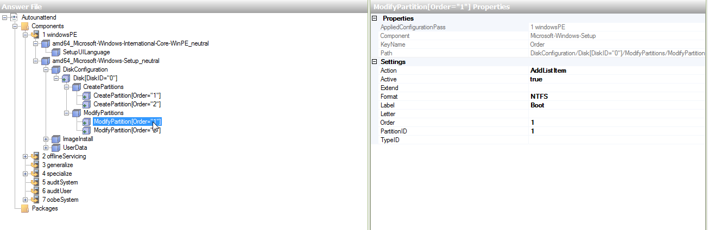
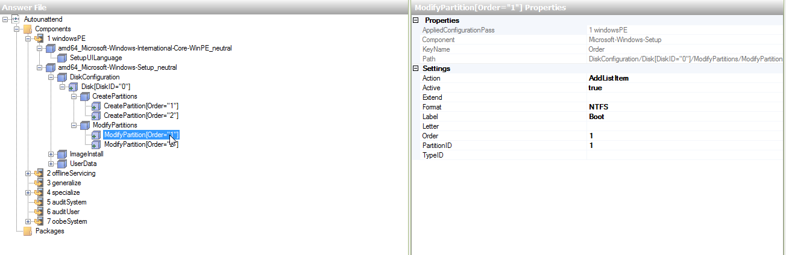

 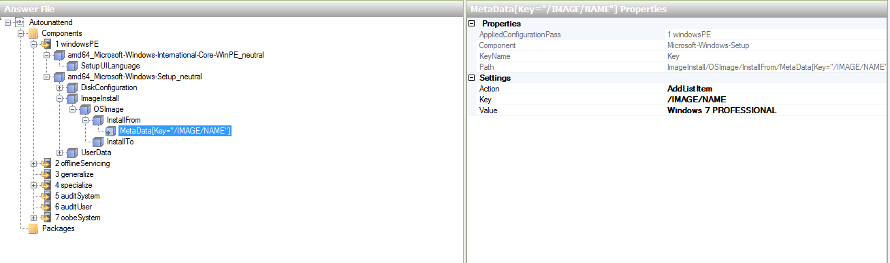
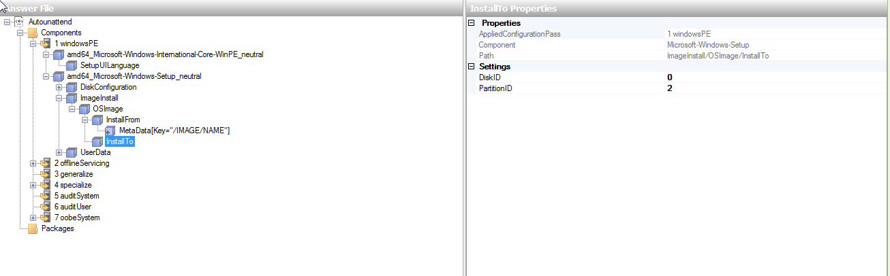
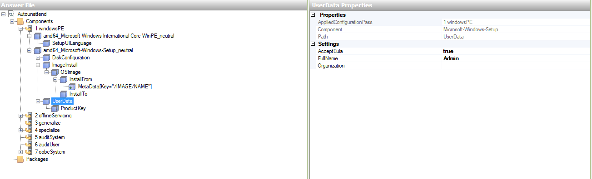
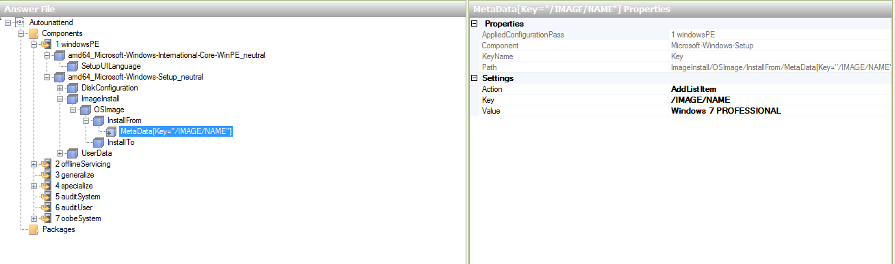
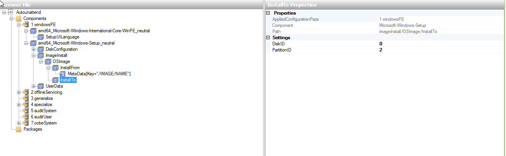
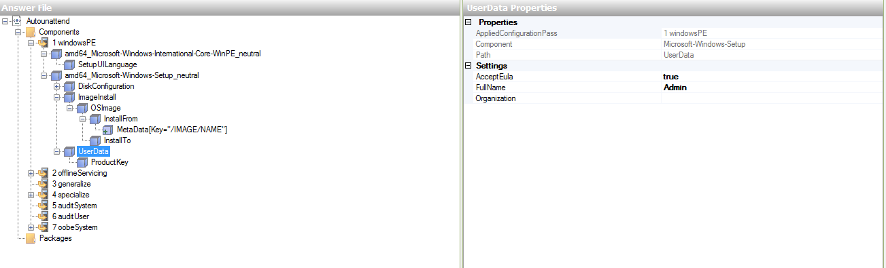


 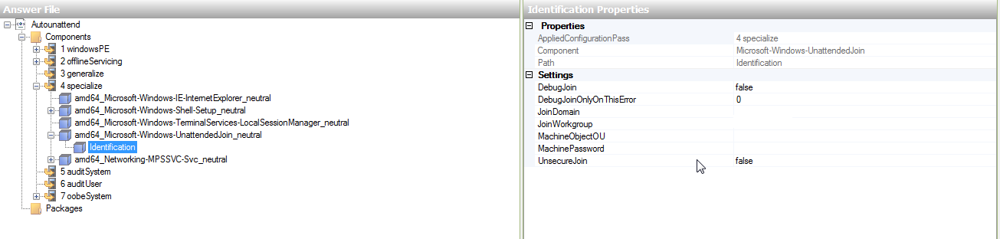
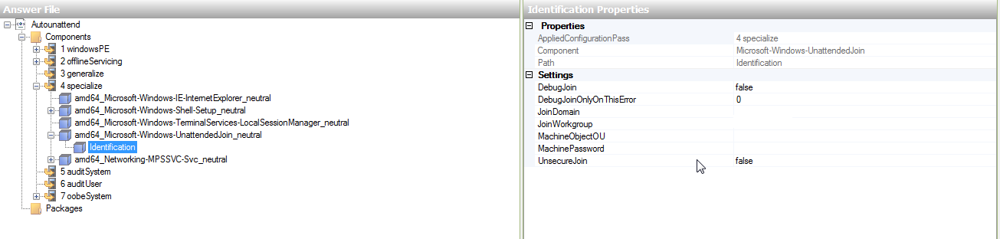

 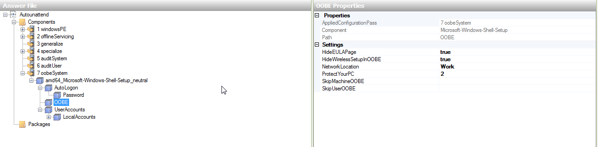
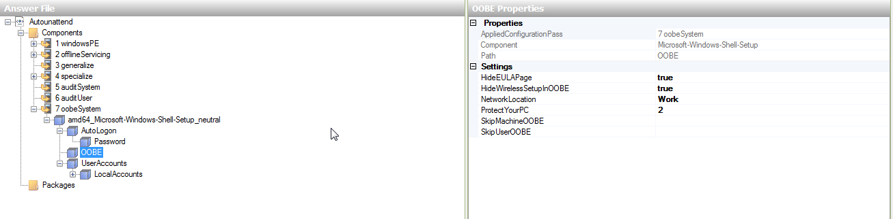

 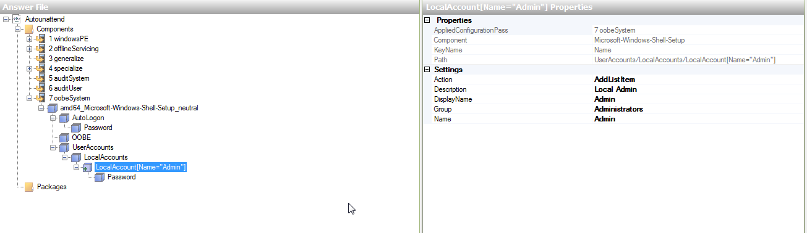
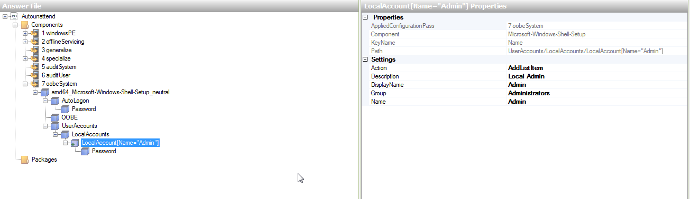

 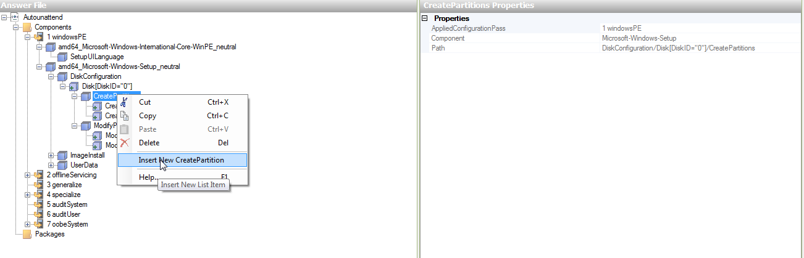
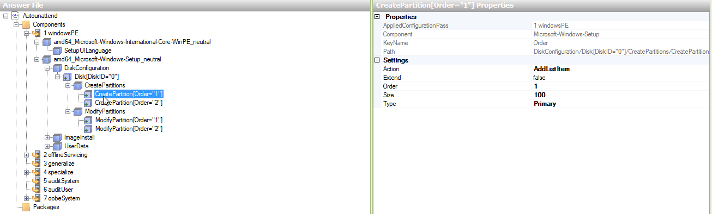
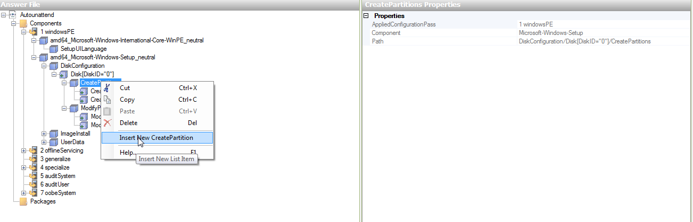
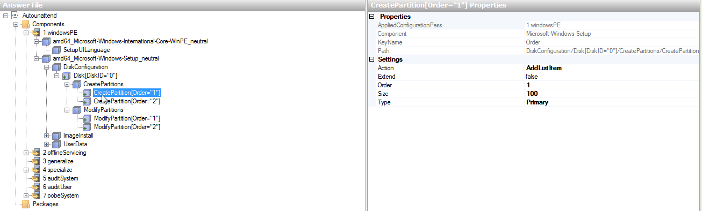


 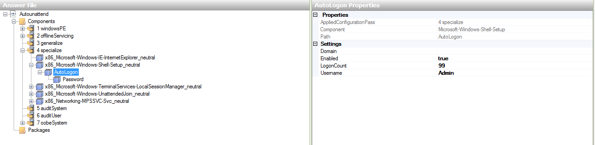
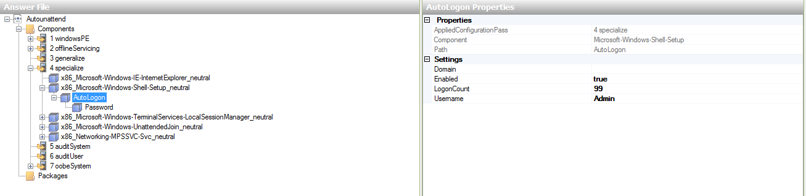


 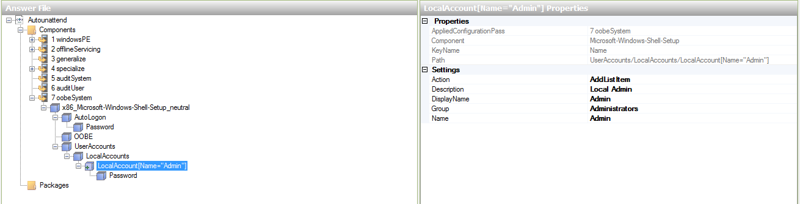
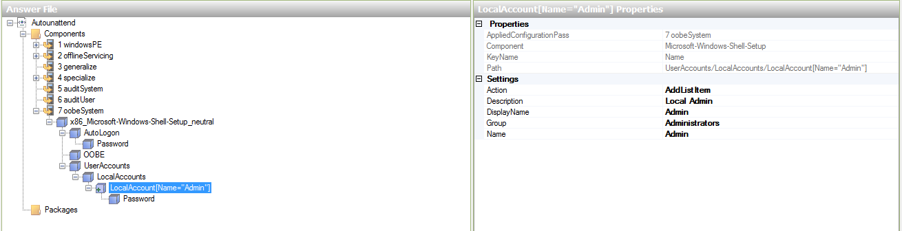

Windows XP¶
Instructions:
Download and install nLite
Copy contents of Windows XP Disk to Harddrive
Open nLite
Locate the copied Windows XP files
Integrate updates and drivers if you want
At Unattended section
Fully automated
Enabled
XXXXX-XXXXX-XXXXX-XXXXX-XXXXX (please change when activating Windows)
Automatic
Turn off Firewall
Skip OOBE
Turn off Hibernate
System Restore Service Enabled
At Users section
Add an account
Username: admin
Password: 1234567
Local Group: Administrators
At Owner and Network ID
Computer Name: windowsxp
Workgroup: WORKGROUP
Full Name: Admin
Organization: Organization
At Regional section
Language: English (South Africa)
Localization: English (United States)
Keyboard: US
Location: South Africa
Time Zone: (GMT +02{00) Harare, Pretoria
At Automatic Updates
Download and notify of installation
Tweek the disk if you want
Start the Process and close nLite
Edit [copied xp location]I386winnt.sif
under [Unattended] put: “Repartition = “Yes””
under [Data] put: “AutoPartition = 1”
Open nLite again and go straight to Bootable ISO
Make a Bootable ISO with nLite
Use ImgBurn to write ISO to disk.